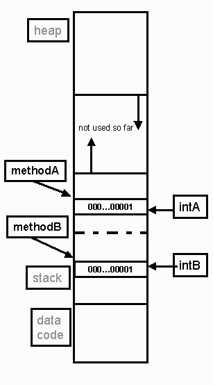
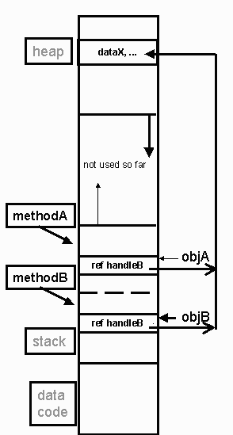

Routines: Fundamental Building Blocks of Programs Spring, 2000
Goal: Explore various different parameter passing schemes and typing of
functions.
What will be covered ?
-
The semantics of different parameter passing mechanisms
-
Named parameters
Subprograms and Parameters
-
Most languages distinguish between
-
Procedures
-
Functions.
-
Object oriented languages call them methods.
-
Subprograms
-
Have a name,
-
Formal parameter types (and formal parameter names in several languages)
-
Arity is the number of parameters
-
Return type, in the case of a function.
-
Algol 68 and C, C++, Java do not distinguish between functions and
procedures
-
Using the return type void simulates a procedure
Ada Example:
PROCEDURE max (x,y : in INTEGER; maximum : out INTEGER) is
BEGIN
IF x > y THEN
ELSE
END IF;
END max;
FUNCTION max1 (x,y : in INTEGER) return INTEGER is
BEGIN
IF x > y THEN
ELSE
END IF;
END max1;
Parameter Passing Mechanisms
One of the most important design decisions is which parameter passing methods
are implemented
Pass by Value
Pass by Result
Pass by Value Result
Pass by Reference
Pass by Name
Pass by Value
Default mechanism in Pascal, Modula-2, Ada
Main mechanism in C and Algol 68
Only mechanism in Java
For reference types (objects) only the value of the reference is passed
Arguments are
Evaluated at time of call
Become the values of the parameters during the execution of the subprogram
Some language may not evaluation of the arguments
int upOnly(int i, int j){
if (j > 0) return (i+j);
else return i;
}
...
upOnly(x+y, 2+3);
Pascal, Java and Modula-2 parameters are treated like initialized local
variables
Assignments to the parameters do not cause changes outside the subprogram
Ada: The in parameter may not be assigned to
Java: The keyword final prevents assigning to the parameter at all.
However, objects may receive messages that change the objects internal
state
void methodJ (final Obj obj) {
obj.changeStateTo(300);
obj = new Obj(); // will not compile
}
This C++ code has the same effect as the Java code
void methodC (const Obj &obj){
obj.changeStateTo(300);
obj = new Obj(); // will not compile
}??
Evaluation of parameters
Order of evaluation of parameters with side effects can be resolved by
insisting on an order in evaluating (right to left or left to right).
Java enforces the above
Most languages the evaluation order is implementation dependent.
Parameter Evaluation and Side Effects
Try on a variety of C and C++ compilers:
y = -1;
upOnly(++y, ++y);
Some implementations evaluate the first parameter (and modify it) before
the second, others evaluate the last parameter first.
Some language definitions make this dependency an error.
Pass by VALUE and Java
Values are copied.
void methodA (int intA ) {
. . .
}
void methodB ( ) {
. . .
int intB = 1;
methodA (intB);
}

Pass by Value: Reference types
Looks similar to pass by reference but is NOT pass by reference.
Reference handles are copied
void methodA ( Obj objA ) {
. . .
}
void methodB ( ) {
. . .
Obj objB = new Obj( );
methodA (objB);
}

The Swapping Problem: 1A
Passing primitive types in Java
void swap (int x, int y){
int z;
z = x;
x = y;
y = z;
}
A call to swap does not change the actual parameters. The effect of swap
(a,b) is
x := a;
y := b;
z := x;
x := y;
y := z;
The values of a and b are not changed.
The Swapping Problem: 1B
Passing reference types in Java
void swap (Object x, Object y){
Object z;
z = x;
x = y;
y = z;
}
A call to swap does not change the actual parameters' reference. The effect
of swap (a,b) is
x := a;
y := b;
z := x;
x := y;
y := z;
The values of a and b are not change i.e. a and b still refer to the original
objects
BUT.....
The Swapping Problem 1C
-
However, the state of objects referred to by the parameters can be changed!
void swap (Obj x, Obj y){
DataTypeX z;
z = x.getDataX();
x.setDataX(y.getDataX());
y.setDataX(z);
}
-
A call to swap can change data fields in objects a, b
-
We did not change what a and b refer to!
Pass by Reference (or by Sharing)
Pass by Value-Result
-
Also called COPY-IN, COPY-OUT.
-
In Ada, this is the mechanism of the IN OUT parameter for scalar types
-
Aliasing distinguishes pass by value-result from pass by reference
a : INTEGER;
PROCEDURE p(x,y: IN OUT INTEGER) is
BEGIN
x := x + x ;
y := y + y;
END;
BEGIN
a := 1;
p(a,a);
END;
-
Assuming pass by reference what is the last value of "a"?
-
Assuming pass by Copy-in Copy-out what is the last value of "a"?
Issues left unspecified
-
Order the results are copied back
-
Are the locations of arguments stored or recalculated on return?
-
ADA Quirk: Ada's definition states that in out parameters may be
implemented as pass by reference or pass by value-result for non-scalar
types.
Another Swap Problem 3:
ADA:
PROCEDURE Main IS
PROCEDURE Swap(x,y: IN OUT integer) is
BEGIN
x := x + y;
y := x - y;
x := x - y;
END;
BEGIN
a := 1;
Swap(a,a);
END;
Pascal:
PROCEDURE MAIN
PROCEDURE Swap(VAR x,y: integer);
BEGIN
x := x + y ;
y := x - y ;
x := x - y ;
END;
BEGIN
a := 1;
Swap(a,a)
END;
-
What is the last value of a after each is executed?
-
What is the value of "a" after p is called? (Ada 1, Pascal 0)
-
Another difference:
-
If the subprogram terminates abnormally (i.e.. via an exception handler)
the actual parameter
-
might have changed value using the call by reference.
-
but actual parameter will not change using call by value-result
Pass by Name (Lazy Evaluation)
-
Used in Algol 60 and some functional languages including Haskell
-
Arguments are not evaluated until their actual use in the called program.
-
Example:
int i;
int a[ ] = new int[2];
void p(x) { //pass by name
i = i+1;
x = x+1;
}
void main() {
i = 0;
a[0] = 0;
a[1] = 1;
p( a[i] );
}
-
To “hand execute” pass by name,
-
just substitute the actual parameters textually in place of the formal
parameters.
-
Thus the above would be
in main: i = 0;
a[0] = 0;
a[1] = 1;
in p(x): i = i + 1;
a[i] = a[i]+1;
Unlike other languages, this code modifies a[1], not a[0]!
Jensen's
Device is an example showing the power of pass by name.
Swap Problem 5
(C syntax, Call by name)
void swap(int& x, int& y){
int t;
t = x;
x = y;
y = t;
}
Consider
int i = 1;
int a[4] = {2,3,3,4};
swap(i, a[i]);
You would hope to get
a = {2,1,3,4} and i = 3
In fact you execute:
t= i;
i= a[i];
a[i]= t;
which gives i = 3, a = {2,3,3,1}
Functional Languages and Pass by Name
Since functional languages do not have state changes Pass by Name is an
excellent mechanism for passing variables.
This the main mechanism in Haskell.
This mechanism enables new and interesting programming abstractions.
In non pure functional languages call by name is hard to implement
If in evaluating the parameter, the parameter is a functions with
side effects, you may effect in unexpected ways the value of a variable
in later use.
The semantics of call by name is very difficult to very messy to implement.
Some additional variations : Default Parameter Values
Ada and C++ offer default values for variables
C++
int get_word(char*, int &, int start = 0);
C: Parameter names are not needed in function prototype
Ada
TYPE intptr is ACCESS integer;
FUNCTION Get_word(C : String; X : intptr; Start : integer := 0 )
RETURN Integer;
Both languages parameters with default values can be omitted
C++ needs the default parameters places at the end of the list of parameters
Otherwise, function calls would be ambiguous
Ada the order is normal.
Ada allows named parameter passing
V := Get_word( Start => 1,
C => “abc”,
X => new integer’(1)
);
The existence of named parameter passing forces Ada to require that parameter
names be provided in the subprogram declaration.
{kind=link}